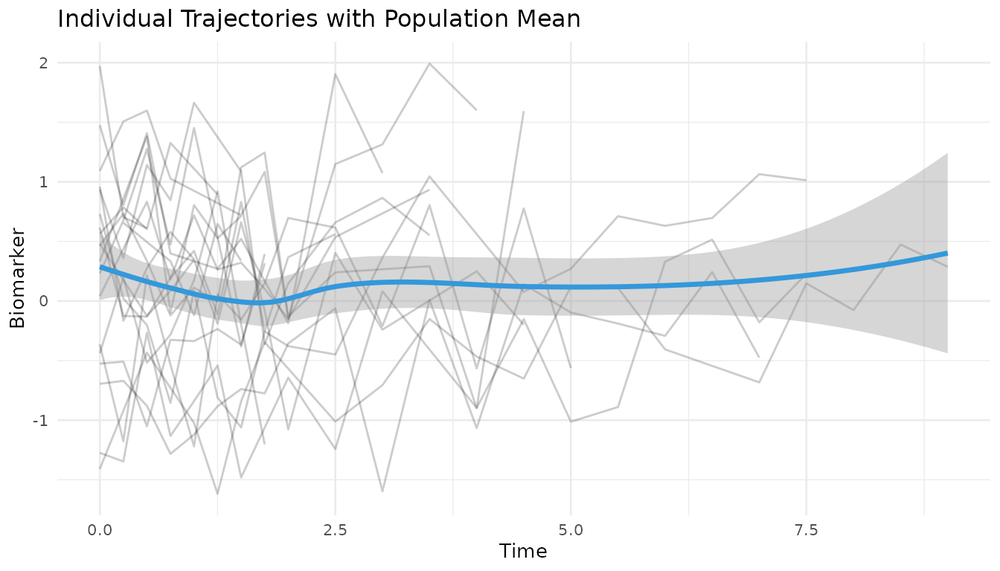
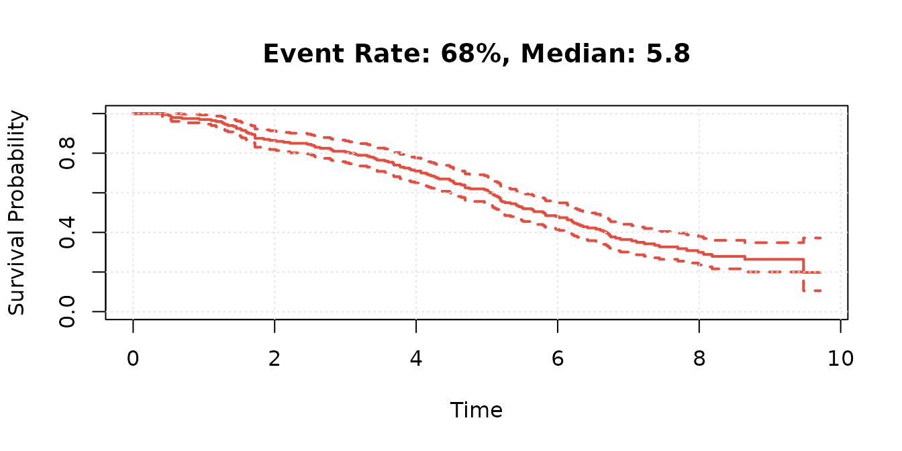
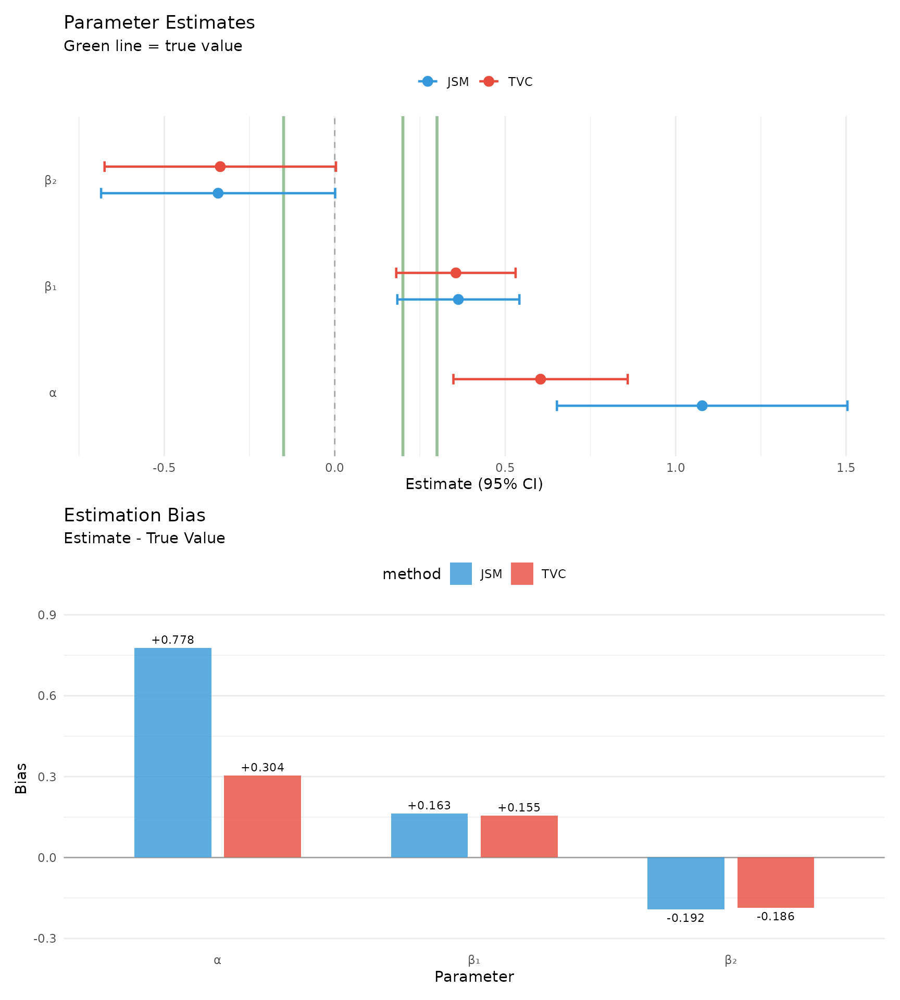

Introduction
This vignette compares joint modeling (JSM package) with time-varying Cox regression using simulated data with known parameters. Joint models properly account for measurement error and informative dropout, while naive approaches may yield biased estimates.
Setup
library(JointODE)
library(JSM)
library(nlme)
library(survival)
library(ggplot2)
library(dplyr)
library(tidyr)
library(patchwork)
set.seed(2024)
# Generate data with known parameters
sim_data <- JointODE::simulate(
n = 200, # Number of subjects
sigma_e = 0.5, # Measurement error SD
verbose = FALSE
)
long_data <- sim_data$longitudinal_data
surv_data <- sim_data$survival_data
# Data summary
cat(sprintf(
"Dataset: %d subjects, %d observations\n",
n_distinct(long_data$id), nrow(long_data)
))
#> Dataset: 200 subjects, 2739 observations
cat(sprintf(
"Events: %.0f%% (median follow-up: %.1f)\n",
100 * mean(surv_data$status),
median(surv_data$time)
))
#> Events: 68% (median follow-up: 5.8)Data Preparation
# Format data for JSM package
jsm_data <- dataPreprocess(
long = long_data %>% rename(ID = id),
surv = surv_data %>% rename(ID = id, survtime = time),
id.col = "ID",
long.time.col = "time",
surv.time.col = "survtime",
surv.event.col = "status"
) %>%
rename(
obstime = time,
start = start.join,
stop = stop.join,
event = event.join
)
surv_data_jsm <- surv_data %>% rename(ID = id, survtime = time)Exploratory Analysis
# Visualize longitudinal trajectories
long_data %>%
filter(id %in% sample(unique(id), 20)) %>%
ggplot(aes(time, v)) +
geom_line(aes(group = id), alpha = 0.2) +
geom_smooth(se = TRUE, color = "#3498DB", size = 1.2) +
theme_minimal(base_size = 10) +
labs(
x = "Time", y = "Biomarker",
title = "Individual Trajectories with Population Mean"
)
# Survival distribution
km_fit <- survfit(Surv(survtime, status) ~ 1, data = surv_data_jsm)
plot(km_fit,
xlab = "Time", ylab = "Survival Probability",
main = sprintf(
"Event Rate: %.0f%%, Median: %.1f",
100 * mean(surv_data_jsm$status), median(km_fit)
),
conf.int = TRUE, mark.time = FALSE, lwd = 2, col = "#E74C3C"
)
grid(lty = 3, col = "gray90")
Model Fitting
Longitudinal Model
fit_lme <- lme(
v ~ obstime + x1 + x2,
random = ~ 1 | ID,
data = jsm_data,
control = lmeControl(opt = "optim")
)
summary(fit_lme)
#> Linear mixed-effects model fit by REML
#> Data: jsm_data
#> AIC BIC logLik
#> 4493.759 4529.242 -2240.879
#>
#> Random effects:
#> Formula: ~1 | ID
#> (Intercept) Residual
#> StdDev: 0.460171 0.4999725
#>
#> Fixed effects: v ~ obstime + x1 + x2
#> Value Std.Error DF t-value p-value
#> (Intercept) -1.5327874 0.19313442 2536 -7.936376 0.0000
#> obstime 0.2991724 0.02235828 2536 13.380835 0.0000
#> x1 1.6202115 0.20541856 2536 7.887367 0.0000
#> x2 -0.0966429 0.09769461 2536 -0.989234 0.3226
#> Correlation:
#> (Intr) obstim x1
#> obstime -0.972
#> x1 -0.983 0.977
#> x2 0.135 -0.126 -0.142
#>
#> Standardized Within-Group Residuals:
#> Min Q1 Med Q3 Max
#> -3.144877996 -0.648503868 0.009399763 0.640988806 3.049132699
#>
#> Number of Observations: 2739
#> Number of Groups: 200Baseline Survival
fit_cox <- coxph(
Surv(start, stop, event) ~ w1 + w2,
data = jsm_data,
x = TRUE
)
summary(fit_cox)
#> Call:
#> coxph(formula = Surv(start, stop, event) ~ w1 + w2, data = jsm_data,
#> x = TRUE)
#>
#> n= 2739, number of events= 135
#>
#> coef exp(coef) se(coef) z Pr(>|z|)
#> w1 0.34058 1.40577 0.08891 3.831 0.000128 ***
#> w2 -0.35403 0.70186 0.17285 -2.048 0.040539 *
#> ---
#> Signif. codes: 0 '***' 0.001 '**' 0.01 '*' 0.05 '.' 0.1 ' ' 1
#>
#> exp(coef) exp(-coef) lower .95 upper .95
#> w1 1.4058 0.7114 1.1810 1.6734
#> w2 0.7019 1.4248 0.5002 0.9849
#>
#> Concordance= 0.595 (se = 0.028 )
#> Likelihood ratio test= 18.91 on 2 df, p=8e-05
#> Wald test = 19.34 on 2 df, p=6e-05
#> Score (logrank) test = 19.59 on 2 df, p=6e-05Joint Model
fit_jsm <- jmodelTM(
fit_lme,
fit_cox,
data = jsm_data,
timeVarY = "obstime",
control = list(
delta = 1e-8,
max.iter = 500,
tol.P = 1e-04
)
)
#> Running jmodelTM(), may take some time to finish.
summary(fit_jsm)
#>
#> Call:
#> jmodelTM(fitLME = fit_lme, fitCOX = fit_cox, data = jsm_data,
#> timeVarY = "obstime", control = list(delta = 1e-08, max.iter = 500,
#> tol.P = 1e-04))
#>
#> Data Descriptives:
#> Longitudinal Process Survival Process
#> Number of Observations: 2739 Number of Events: 135 (67.5%)
#> Number of Groups: 200
#> AIC BIC logLik
#> 5985.089 6014.774 -2983.545
#>
#> Coefficients:
#> Longitudinal Process: Linear mixed-effects model
#> Estimate StdErr z.value p.value
#> (Intercept) -1.518357 0.192863 -7.8727 3.470e-15 ***
#> obstime 0.299562 0.022323 13.4191 < 2.2e-16 ***
#> x1 1.599272 0.205102 7.7975 6.316e-15 ***
#> x2 -0.091260 0.097417 -0.9368 0.3489
#> ---
#> Signif. codes: 0 '***' 0.001 '**' 0.01 '*' 0.05 '.' 0.1 ' ' 1
#>
#> Survival Process: Proportional hazards model with unspecified baseline hazard function
#> Estimate StdErr z.value p.value
#> w1 0.362624 0.091353 3.9695 7.203e-05 ***
#> w2 -0.342122 0.175151 -1.9533 0.05078 .
#> v 1.077933 0.217413 4.9580 7.122e-07 ***
#> ---
#> Signif. codes: 0 '***' 0.001 '**' 0.01 '*' 0.05 '.' 0.1 ' ' 1
#>
#> Variance Components:
#> StdDev
#> Random 0.4608955
#> Residual 0.4996056
#>
#> Integration: (Adaptive Gauss-Hermite Quadrature)
#> quadrature points: 9
#>
#> StdErr Estimation:
#> method: profile Fisher score with Richardson extrapolation
#>
#> Optimization:
#> convergence: success
#> iterations: 5Time-Varying Cox
fit_tvcox <- coxph(
Surv(start, stop, event) ~ w1 + w2 + v + cluster(ID),
data = jsm_data
)
summary(fit_tvcox)
#> Call:
#> coxph(formula = Surv(start, stop, event) ~ w1 + w2 + v, data = jsm_data,
#> cluster = ID)
#>
#> n= 2739, number of events= 135
#>
#> coef exp(coef) se(coef) robust se z Pr(>|z|)
#> w1 0.35545 1.42683 0.08933 0.08201 4.334 1.46e-05 ***
#> w2 -0.33580 0.71477 0.17320 0.16137 -2.081 0.0374 *
#> v 0.60377 1.82899 0.13044 0.12960 4.659 3.18e-06 ***
#> ---
#> Signif. codes: 0 '***' 0.001 '**' 0.01 '*' 0.05 '.' 0.1 ' ' 1
#>
#> exp(coef) exp(-coef) lower .95 upper .95
#> w1 1.4268 0.7009 1.215 1.6756
#> w2 0.7148 1.3991 0.521 0.9807
#> v 1.8290 0.5467 1.419 2.3579
#>
#> Concordance= 0.641 (se = 0.025 )
#> Likelihood ratio test= 40.58 on 3 df, p=8e-09
#> Wald test = 53.53 on 3 df, p=1e-11
#> Score (logrank) test = 41.11 on 3 df, p=6e-09, Robust = 38.44 p=2e-08
#>
#> (Note: the likelihood ratio and score tests assume independence of
#> observations within a cluster, the Wald and robust score tests do not).Comparison
# True parameter values (using defaults from JointODE::simulate)
# alpha[1] = 0.3 (value effect), phi = c(0.2, -0.15) for survival covariates
true_params <- data.frame(
param = c("Association", "w1", "w2"),
true_value = c(0.3, 0.2, -0.15)
)
# Extract and organize coefficients
extract_coef <- function(jsm, tvcox) {
jsm_vcov <- sqrt(diag(jsm$Vcov))
tvcox_summ <- summary(tvcox)$coefficients
data.frame(
param = c("Association", "w1", "w2"),
jsm_est = c(
jsm$coefficients$alpha,
jsm$coefficients$phi[c("w1", "w2")]
),
jsm_se = c(
jsm_vcov["alpha:v"],
jsm_vcov[c("phi:w1", "phi:w2")]
),
tvc_est = coef(tvcox)[c("v", "w1", "w2")],
tvc_se = tvcox_summ[c("v", "w1", "w2"), "se(coef)"]
) %>%
mutate(across(c("jsm_est", "jsm_se", "tvc_est", "tvc_se"), as.numeric))
}
comp <- extract_coef(fit_jsm, fit_tvcox) %>%
left_join(true_params, by = "param") %>%
mutate(
diff = jsm_est - tvc_est,
diff_pct = 100 * diff / abs(tvc_est),
jsm_p = 2 * pnorm(-abs(jsm_est / jsm_se)),
tvc_p = 2 * pnorm(-abs(tvc_est / tvc_se)),
jsm_bias = jsm_est - true_value,
tvc_bias = tvc_est - true_value
)
# Summary table with significance stars
format_est <- function(est, se, p) {
stars <- dplyr::case_when(
p < 0.001 ~ "***",
p < 0.01 ~ "**",
p < 0.05 ~ "*",
TRUE ~ ""
)
sprintf("%.3f (%.3f)%s", est, se, stars)
}
# Simple comparison table
comp %>%
mutate(
Parameter = c("α (Association)", "β₁ (w1)", "β₂ (w2)"),
True = sprintf("%.2f", true_value),
`JSM` = format_est(jsm_est, jsm_se, jsm_p),
`TVC` = format_est(tvc_est, tvc_se, tvc_p),
`JSM Bias` = sprintf("%+.3f", jsm_bias),
`TVC Bias` = sprintf("%+.3f", tvc_bias)
) %>%
select(Parameter, True, JSM, TVC, `JSM Bias`, `TVC Bias`) %>%
knitr::kable(
caption = "Parameter Estimates (* p<0.05, ** p<0.01, *** p<0.001)",
align = c("l", rep("c", 5))
)| Parameter | True | JSM | TVC | JSM Bias | TVC Bias |
|---|---|---|---|---|---|
| α (Association) | 0.30 | 1.078 (0.217)*** | 0.604 (0.130)*** | +0.778 | +0.304 |
| β₁ (w1) | 0.20 | 0.363 (0.091)*** | 0.355 (0.089)*** | +0.163 | +0.155 |
| β₂ (w2) | -0.15 | -0.342 (0.175) | -0.336 (0.173) | -0.192 | -0.186 |
# Combined visualization
library(patchwork)
library(tidyr)
# Clean forest plot
forest_data <- comp %>%
pivot_longer(c(jsm_est, tvc_est), names_to = "model", values_to = "est") %>%
mutate(
se = ifelse(model == "jsm_est", jsm_se, tvc_se),
lower = est - 1.96 * se,
upper = est + 1.96 * se,
model = factor(model, labels = c("JSM", "TVC")),
param_label = c("α", "β₁", "β₂")[as.numeric(factor(param))],
param = factor(param, levels = c("Association", "w1", "w2"))
)
p_forest <- ggplot(forest_data, aes(x = est, y = param_label, color = model)) +
geom_vline(xintercept = 0, linetype = "dashed", alpha = 0.3) +
geom_vline(
data = true_params %>%
mutate(param_label = c("α", "β₁", "β₂")),
aes(xintercept = true_value),
color = "darkgreen", alpha = 0.4, size = 1
) +
geom_errorbarh(aes(xmin = lower, xmax = upper),
position = position_dodge(0.5), height = 0.2, size = 0.8
) +
geom_point(position = position_dodge(0.5), size = 3) +
scale_color_manual(values = c("JSM" = "#3498DB", "TVC" = "#E74C3C")) +
theme_minimal(base_size = 11) +
theme(
legend.position = "top",
panel.grid.major.y = element_blank()
) +
labs(
x = "Estimate (95% CI)", y = NULL, color = NULL,
title = "Parameter Estimates",
subtitle = "Green line = true value"
)
# Simple bias plot
bias_data <- comp %>%
pivot_longer(c(jsm_bias, tvc_bias),
names_to = "method", values_to = "bias"
) %>%
mutate(
method = factor(method, labels = c("JSM", "TVC")),
param_label = c("α", "β₁", "β₂")[as.numeric(factor(param))]
)
p_bias <- ggplot(bias_data, aes(x = param_label, y = bias, fill = method)) +
geom_hline(yintercept = 0, linetype = "solid", alpha = 0.3) +
geom_col(position = position_dodge(0.7), alpha = 0.8, width = 0.6) +
geom_text(aes(label = sprintf("%+.3f", bias)),
position = position_dodge(0.7),
vjust = ifelse(bias_data$bias > 0, -0.5, 1.5),
size = 3
) +
scale_fill_manual(values = c("JSM" = "#3498DB", "TVC" = "#E74C3C")) +
scale_y_continuous(expand = expansion(mult = c(0.15, 0.15))) +
theme_minimal(base_size = 11) +
theme(
legend.position = "top",
panel.grid.major.x = element_blank()
) +
labs(
x = "Parameter", y = "Bias", color = NULL,
title = "Estimation Bias",
subtitle = "Estimate - True Value"
)
# Combine plots
p_forest / p_bias
Model Performance
# Calculate C-index for model comparison
library(survival)
# JSM: Combine survival predictors with longitudinal predictions
jsm_risk <- -with(
jsm_data,
fit_jsm$coefficients$phi["w1"] * w1 +
fit_jsm$coefficients$phi["w2"] * w2 +
fit_jsm$coefficients$alpha * fitted(fit_lme)
)
# Time-varying Cox: Use built-in linear predictor
tvc_risk <- -predict(fit_tvcox, type = "lp")
# Calculate concordance for both models
jsm_conc <- concordance(Surv(start, stop, event) ~ jsm_risk, data = jsm_data)
tvc_conc <- concordance(Surv(start, stop, event) ~ tvc_risk, data = jsm_data)
# Create comparison
cindex_comp <- data.frame(
Model = c("Joint Model", "Time-Varying Cox"),
Cindex = c(jsm_conc$concordance, tvc_conc$concordance),
SE = sqrt(c(jsm_conc$var, tvc_conc$var))
) %>%
mutate(
Lower = Cindex - 1.96 * SE,
Upper = Cindex + 1.96 * SE,
CI = sprintf("%.3f (%.3f-%.3f)", Cindex, Lower, Upper)
)
# Display table
knitr::kable(
select(cindex_comp, Model, `C-index (95% CI)` = CI),
caption = "Concordance Index: Higher = Better Discrimination",
align = c("l", "c")
)| Model | C-index (95% CI) |
|---|---|
| Joint Model | 0.643 (0.596-0.691) |
| Time-Varying Cox | 0.641 (0.593-0.689) |
#> R version 4.5.1 (2025-06-13)
#> Platform: x86_64-pc-linux-gnu
#> Running under: Ubuntu 24.04.2 LTS
#>
#> Matrix products: default
#> BLAS: /usr/lib/x86_64-linux-gnu/openblas-pthread/libblas.so.3
#> LAPACK: /usr/lib/x86_64-linux-gnu/openblas-pthread/libopenblasp-r0.3.26.so; LAPACK version 3.12.0
#>
#> locale:
#> [1] LC_CTYPE=C.UTF-8 LC_NUMERIC=C LC_TIME=C.UTF-8
#> [4] LC_COLLATE=C.UTF-8 LC_MONETARY=C.UTF-8 LC_MESSAGES=C.UTF-8
#> [7] LC_PAPER=C.UTF-8 LC_NAME=C LC_ADDRESS=C
#> [10] LC_TELEPHONE=C LC_MEASUREMENT=C.UTF-8 LC_IDENTIFICATION=C
#>
#> time zone: UTC
#> tzcode source: system (glibc)
#>
#> attached base packages:
#> [1] splines stats graphics grDevices utils datasets methods
#> [8] base
#>
#> other attached packages:
#> [1] patchwork_1.3.1 tidyr_1.3.1 dplyr_1.1.4
#> [4] ggplot2_3.5.2 JSM_1.0.2 survival_3.8-3
#> [7] statmod_1.5.0 nlme_3.1-168 JointODE_0.0.0.9000
#>
#> loaded via a namespace (and not attached):
#> [1] Matrix_1.7-3 gtable_0.3.6 jsonlite_2.0.0 compiler_4.5.1
#> [5] tidyselect_1.2.1 Rcpp_1.1.0 simsurv_1.0.0 jquerylib_0.1.4
#> [9] systemfonts_1.2.3 scales_1.4.0 textshaping_1.0.1 yaml_2.3.10
#> [13] fastmap_1.2.0 lattice_0.22-7 R6_2.6.1 labeling_0.4.3
#> [17] generics_0.1.4 knitr_1.50 tibble_3.3.0 desc_1.4.3
#> [21] bslib_0.9.0 pillar_1.11.0 RColorBrewer_1.1-3 rlang_1.1.6
#> [25] cachem_1.1.0 deSolve_1.40 xfun_0.53 fs_1.6.6
#> [29] sass_0.4.10 cli_3.6.5 mgcv_1.9-3 withr_3.0.2
#> [33] pkgdown_2.1.3 magrittr_2.0.3 digest_0.6.37 grid_4.5.1
#> [37] lifecycle_1.0.4 vctrs_0.6.5 evaluate_1.0.4 glue_1.8.0
#> [41] farver_2.1.2 ragg_1.4.0 purrr_1.1.0 rmarkdown_2.29
#> [45] pkgconfig_2.0.3 tools_4.5.1 htmltools_0.5.8.1